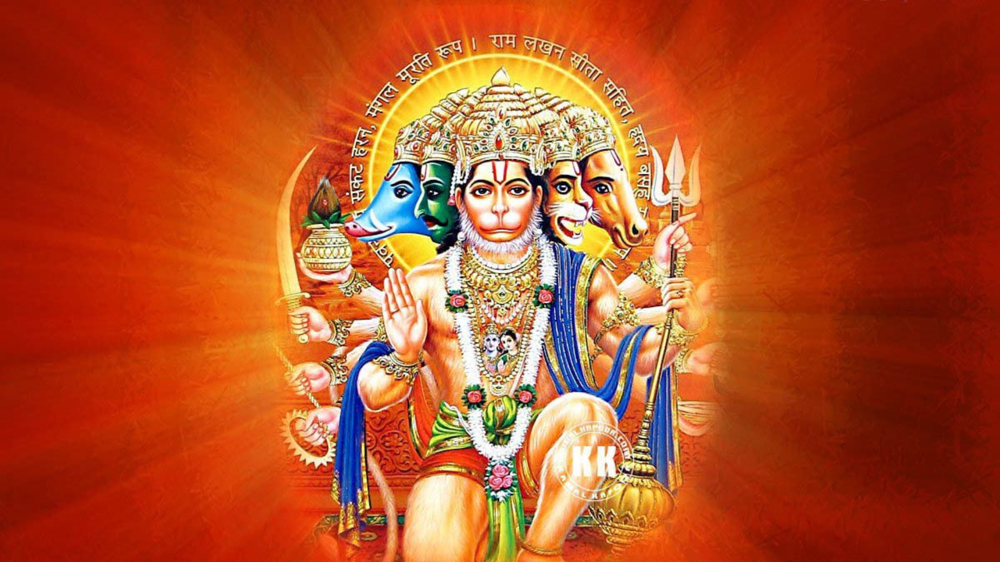

Jai Shree Ram
Objective
To utilize my exceptional strengths and capabilities in serving humanity and upholding dharma as Lord Hanuman.
Summary
A divine and powerful deity in Hindu mythology, revered for immense strength, loyalty, courage, and devotion. Known as the monkey god, I am a symbol of devotion, service, and unwavering commitment to righteousness.
Skills
- Superhuman Strength: Possess unmatched physical strength and prowess, capable of moving mountains and overcoming insurmountable challenges.
- Devotion and Loyalty: Exemplify unwavering dedication and loyalty to Lord Rama, embodying the essence of true devotion and righteousness..
- Intellect and Wisdom: Possess profound wisdom, intelligence, and a deep understanding of dharma (righteousness) and life principles..
- Courage and Fearlessness: Demonstrate fearlessness and bravery in facing adversities, always ready to take on any obstacle with courage.
- Astute Leadership: Exhibit excellent leadership qualities, leading the Vanara Sena (monkey army) during the epic battle in the Ramayana.
- Selflessness and Service: Showcase an inherent nature of selfless service and readiness to assist those in need.
Experience
- Chief Advisor and Devotee to Lord Rama
- Served as a trusted advisor and devoted companion to Lord Rama during the quest to rescue Goddess Sita from the demon king Ravana.
- Instrumental in the construction of the bridge to Lanka to aid Rama's army.
- Vanara Sena Leader
- Led the Vanara Sena in the battle against Ravana's forces, showcasing strategic brilliance and exceptional combat skills.
Education
- Gurukul of Lord Surya (Sun God)
- Received extensive knowledge, wisdom, and training under the guidance of Lord Surya, enhancing intellect and divine capabilities
- Panchajanya Mountain
- Engaged in rigorous spiritual and physical training, acquiring unparalleled strength and discipline.